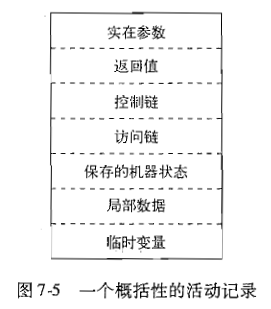
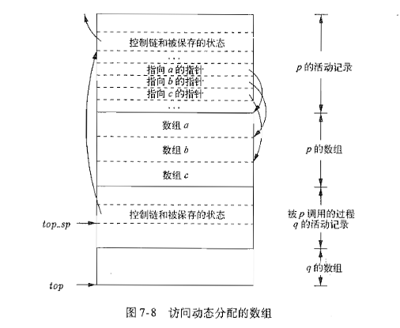
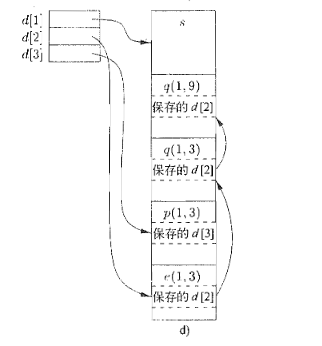

为了方便实现代码中的名字, 作用域, 绑定, 数据类型, 运算符, 过程, 参数等抽象概念, 编译器创建并管理一个运行时环境(run-time environment)
本章两个主题是存储位置的分配和对变量及数据的访问, 我们将详细讨论存储管理 (栈分配, 堆管理和垃圾回收)
存储组织
一个典型的目标程序在逻辑地址空间的运行时映象包含数据区和代码区. C++在Linux上按如下方式划分存储空间

通常代码区位于低地址, 而用户栈位于高地址
数据对象的内存对齐, 比如其地址必须能被4整除. 当你分配了char ch[10], 而它实际占用了12个字节. 这种因对齐而导致的闲置空间称为补白(padding)
如果空间紧张, 编译器肯那个会压缩数据以消除补白, 但需要有额外指令用来定位这些数据, 使它们工作起来好像是内存对齐的
生成得到的目标代码的大小在编译时刻就已经确定了, 因此可执行目标代码被放在静态确定的区域: 代码区 它通常处于存储的低端
另外还有两个用来存放动态数据的区域: 栈和堆. 它们在剩余地址的两端, 并根据需要向对方方向生长. 栈区用来存放称为活动记录的数据结构, 这些活动记录在函数调用过程中生成
空间的栈式分配
编程语言使用过程, 函数或方法作为用户自定义动作的单元, 通常的实现是在运行时按照栈进行管理: 当过程被调用时, 存放该过程的局部变量被压入栈, 当这个过程解说时, 该空间被弹出这个栈.
活动树
- 过程调用序列对应活动树的前序遍历
- 过程返回的序列对应活动树的后续遍历
(详情脑补一下)
活动记录
过程调用和返回由控制栈(control stack)的运行时栈进行管理, 每个活跃的活动在控制栈中对应一个活动记录(activation record). 活动树的根位于栈低, 栈中的活动记录序列对应与活动树中到达当前控制所在的活动节点的路径, 该活动节点即为栈顶元素
过程记录可能的内容和顺序:

调用代码序列
实现过程调用的代码段成为调用代码序列(calling sequence), 它为一个活动记录在栈中分配空间.
返回代码序列(return sequence)是类似的代码, 它恢复机器状态, 使得调用过程能够在调用结束后继续执行
设计调用代码和活动记录的布局时的设计原则:
- 调用者传给被调者的参数放在其活动记录的开始位置
- 固定长度的项放置在中间位置, 通常是控制链, 访问链和机器状态字段.
- 起初不能确定大小的项放置在活动记录的尾部, 最常见的就是动态数组
- 确定栈顶指针所指的位置, 通常让它指向活动记录中固定长度字段的末端
栈中的变长数据
大部分程序设计语言, 把编译时刻不能决定大小的对象分配在堆区. 不过也有可以把位置大小的对象, 数组或其他结构分配在栈中, 因为栈分配的开销要小于堆(这么做避免了对其空间进行垃圾回收)
只有一个数据对象局限于某个过程, 且当此过程结束时它变得不可访问, 才可以使用栈为其分配空间
例如p有三个局部数组, 虽然存在栈中, 但它们不是p的活动记录的一部分, 目标代码其实是 依靠相对于栈顶指针top-sp的偏移量来访问数组元素
可以看到被调过程q的活动记录紧随动态数组之后
top标记的是实际的栈顶位置, 指向下一个活动记录开始的位置(用于函数跳转)
top_sp用来定位顶层活动记录的局部的定长字段

栈中非局部数据的访问
接下来讨论过程如何访问它们的数据, 尤其是在过程p中使用但又不属于p的数据
没有嵌套过程
不允许声明嵌套过程的语言其变量的存储分配和访问是简单的
- 全局变量在静态区分配
- 其他变量都是栈顶活动的局部变量(用过top_sp的偏移量来访问)
特点: 被声明的过程可以作为参数来传递, 也可以作为参数返回
允许嵌套过程
访问链
针对嵌套函数的一个直接实现方法是在每个活动记录来增加一个被称为访问链(access link)的指针: 如果p嵌套在q中, 那么p的任何活动中的访问链都指向q, 而且q的嵌套深度比p少1层, 而沿着这条链路找到的活动就是其数据和对应活成可以被当前的过程所访问的所有活动
访问链的处理
过程型参数的访问链
当过程被用作参数时, 调用者要同时传递过程参数的名字和参数对应的访问链
显示表
针对嵌套深度过大而采用的高效实现方法: 用一个辅助数组, 每个元素存了相对应深度的指针, 使得array[i]指向嵌套深度为i的活动记录

堆管理
堆是存储空间的一部分, 用于存储生命周期不确定, 或直到显式删除才释放空间的数据. 比如C语言的malloc()就是在堆上分配空间, 以及C++, Java中的new语句(有人说现代高效JVM的new操作开销与栈分配不相上下???)
存储管理器
存储管理器是应用程序和操作系统之间的接口, 总是跟踪堆区里的控线空间. 具有两个基本功能:
- 分配: 如果可能, 从堆的空闲空间产生所请求大小的连续的堆空间, 如果没有满足大小的堆空间块, 则通过系统调用来获得更多的虚拟空间来扩展堆区大小. 如果物理空间全部用完, 则返回空间耗尽的信息
- 回收: 存储器把回收的空间返还到空闲空间的缓冲池, 以复用该空间
我们所期望的存储管理器特性: - 空间效率: 尽量使程序所占的堆区达到最小, 并减少存储碎片
- 程序效率: 局部性原理(时间和空间), 通过改变数据布局或计算顺序来实现. 参见CSAPP组相关部分
- 低开销: 花费在分配和回收的之间在总运行时间中的比例要小(对小型程序而言)
碎片整理
堆区在程序执行开始是一个连续的空闲单元, 随着这个程序的分配和回收存储工作的进行, 空间被分隔成若干空闲存储块和已用存储块, 而空闲块不一定位于堆区的某个连续的区域中. 我们将空闲存储块成为窗口(hole), 对于每个分配请求存储管理器将其放入一个足够大的窗口中, 除非窗口大小恰好相等, 否则会因为切分某个窗口而创建出更小的窗口
碎片整理的两种策略
- best-fit: 将请求的存储分配在满足请求的最小可用窗口中, 这是使程序中碎片最少的策略
- next-fit: 将对象放置到第一个(地址最低)能够容纳请求对象的窗口中, 这种策略花费时间较少(遍历的次数要少得多), 但是它在总体性能上要比best-fit差
实现best-fit策略时, 我们可以根据空闲块的大小, 将它们分在若干个容器中, 特别是为较小的尺寸设置较多的容器. GNU的C编译器gcc使用存储管理器Lea将所有的存储块对齐到8字节的边界
虽然best-fit可以提高空间效率, 但从空间局部性角度考虑, 它可能并不是最好的
管理和接合空闲空间
一种简单的分配/回收方案是维护一个位映射: 其中的每个比特位对应一个容器, 置位表示占用, 否则则为空闲. 当需要分配一个存储块, 找出相应的块然后置位, 如果没有空闲块, 那就获取一个新的页, 并将其分割成适当大小的存储块
支持相邻空闲块接合的数据结构
- 边界标记: 在每个块的两端都设置一个free/used位, 而与该位相邻位置上存放了该块中的字节数
- 双重链接, 嵌入式的空闲列表
人工回收请求
- 内存泄漏(memory-leak): 一直未能删除不能被引用的数据
- 悬空指针引用(dangling-pointer-dereference): 引用了已经被删除的数据
流行的编程规范:
- 对象所有者: 给每个对象关联上一个所有者
- 引用计数: 给每个动态分配的对象附上一个计数
垃圾回收器